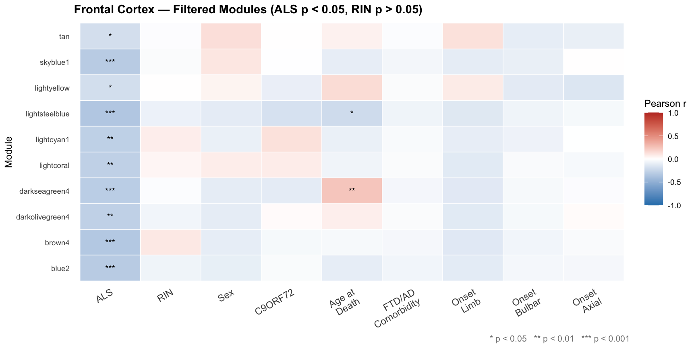
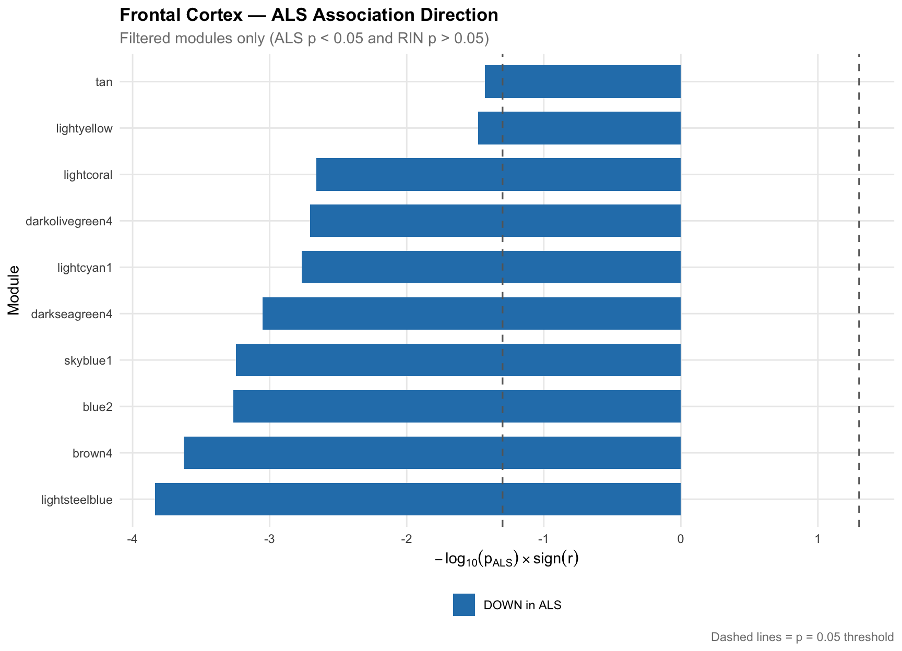

Bulk RNA-seq revealed coordinated immune gene downregulation. Cell-type deconvolution uncovered the real neuronal story beneath it.
Region Overview
After applying the dual filter — ALS p < 0.05 and RIN p > 0.05 — 10 non-grey modules passed in the frontal cortex. Every single one is negatively correlated with ALS status, indicating a broad, coordinated suppression of gene expression programmes in ALS frontal cortex.
Notably, the top modules are enriched for immunoglobulin heavy chain variable (IGHV) and kappa chain (IGKV) genes, suggesting that part of the bulk signal reflects reduced immune cell infiltration or altered B-cell/plasma cell populations in ALS frontal cortex. These signals would be invisible without gene-level examination of module content.
Module Analysis
Each module's top genes are ranked by a combined score of ALS gene significance × module membership — identifying genes most central to both the module and the ALS phenotype.
Dominated by immunoglobulin heavy chain variable (IGHV) genes — the antigen-recognition segments of antibodies produced by B cells and plasma cells. SELE (E-selectin) is an endothelial adhesion molecule that recruits immune cells. The downregulation of this module in ALS frontal cortex may reflect reduced B-cell/plasma cell infiltration or altered adaptive immune surveillance in the disease state.
Immunoglobulin kappa chain variable (IGKV) genes form the light chains of antibodies. This second immunoglobulin module reinforces the pattern from lightsteelblue — both heavy and light chain components of the antibody repertoire are coordinately downregulated in ALS frontal cortex. Together, these two modules provide converging evidence of altered humoral immune function or immune cell composition in ALS.
CD1E encodes a non-classical MHC molecule that presents lipid antigens to T cells — a bridge between innate lipid sensing and adaptive immunity. Its downregulation in ALS FC, alongside pseudogenes and small ncRNAs, suggests disrupted antigen presentation capacity. This may reflect fewer antigen-presenting cells or altered lipid metabolism in ALS frontal cortex.
SLC12A1 encodes NKCC2, a sodium-potassium-chloride cotransporter of the same family as KCC2 (SLC12A5), which maintains inhibitory neuron chloride gradients. Loss of ion cotransporter expression could impair ionic homeostasis in ALS frontal cortex neurons. The lncRNA LINC02230 may have regulatory roles in this process.
ALPI (intestinal alkaline phosphatase) detoxifies bacterial lipopolysaccharide (LPS) and regulates gut-brain axis signalling. Emerging evidence links gut microbiome dysbiosis to ALS progression. The presence of this enzyme in a downregulated frontal cortex module raises interesting questions about systemic inflammatory signalling in ALS.
TRIM6 and TRIM34 are interferon-stimulated antiviral restriction factors of the TRIM family. Their coordinate downregulation suggests suppressed innate antiviral immunity in ALS frontal cortex — potentially leaving neurons more vulnerable to neurotropic stressors. The GAGE cancer-testis antigen GAGE12C is also expressed in neurons under stress.
A small module (n=24) anchored by HOX locus noncoding transcripts. HOXA10-AS is an antisense lncRNA at the HOXA10 locus involved in developmental patterning. The module also contains microRNA precursors (MIR9500, MIR3116-1), suggesting coordinated regulation of a HOX-associated regulatory RNA cluster in ALS frontal cortex.
Another small HOX-cluster noncoding module. HOXC-AS2 is an antisense lncRNA at the HOXC locus; the module also contains snoRNA (SNORD114-17) and LINC transcripts. The parallel downregulation of HOX-associated noncoding RNAs across two separate modules (darkolivegreen4 and lightcoral) suggests a broader HOX regulatory network is selectively silenced in ALS frontal cortex.
A larger module (n=317) with mixed inflammatory and adhesion gene content. SELP (P-selectin) mediates leukocyte–endothelium adhesion during inflammation. CLEC4F is a C-type lectin expressed in Kupffer cells and tissue macrophages. CDH17 encodes a calcium-dependent cell adhesion molecule. The module suggests an immune/vascular component that is downregulated in ALS frontal cortex.
The largest FC module (n=510), with borderline ALS significance (p=0.037). CENATAC encodes a centrosome and cilia-associated protein involved in spliceosome regulation. MRPS25 is a mitochondrial ribosomal protein. TECTA encodes α-tectorin, a major component of the tectorial membrane — a surprising finding in cortex, possibly representing a moonlighting gene expression programme. The broad size and modest r suggest a heterogeneous module with weaker ALS signal.
Cell-Type Deconvolution
When the bulk frontal cortex data is deconvoluted into excitatory and inhibitory neurons, a completely different biological story emerges — one invisible to bulk analysis alone.
Excitatory Neurons ⚡ Significant
This 206-gene module was the only significant ALS-associated module when excitatory neurons were analysed in isolation. It was downregulated in ALS and remained stable across every parameter combination tested — deepSplit=3, mergeCutHeight=0.10, minModuleSize=30. Stability across parameters is the hallmark of a true biological signal, not a tuning artefact. GO enrichment of this module reveals the specific neuronal functions being lost inside excitatory neurons in ALS frontal cortex — functions that were diluted and obscured in the bulk analysis by immune cell signals.
Inhibitory Neurons
GABAergic interneurons showed no ALS-associated modules across any parameter setting. The WGCNA scale-free topology fit (R²) never exceeded 0.22 for any tested soft power — well below the 0.80+ threshold for a reliable network. This is not a technical failure: it reflects that inhibitory interneurons in the frontal cortex do not undergo the coordinated transcriptional changes seen in excitatory neurons during ALS.
Why does this matter?
TDP-43 pathology and upper motor neuron degeneration in ALS preferentially affect excitatory corticospinal projection neurons. The selective vulnerability of excitatory neurons — and sparing of inhibitory interneurons — seen in neuropathological studies of ALS is perfectly recapitulated here at the transcriptomics level.
Biological Interpretation
The top two modules (lightsteelblue, brown4) are almost entirely composed of IGHV and IGKV immunoglobulin genes. Their coordinate downregulation suggests fewer infiltrating B cells / plasma cells, or a suppressed humoral immune response in ALS frontal cortex — a finding that would be completely missed without examining which genes are in each module.
Deconvolution isolates the genuine neuronal signal: a 206-gene excitatory neuron module significantly downregulated in ALS. This represents the loss of a specific excitatory neuron transcriptional programme — likely related to the upper motor neuron degeneration that is pathologically defined in ALS.
The complete absence of significant ALS-associated modules in inhibitory neurons (R² < 0.22 for all powers) confirms what neuropathologists observe: GABAergic interneurons are relatively spared in ALS frontal cortex, at least at the transcriptional level captured here.
The contrast between bulk (immune-dominated signal) and deconvoluted (neuronal signal) results powerfully illustrates why cell-type deconvolution is necessary. Without it, the 206-gene excitatory neuron finding would be invisible — drowned out by the dominant immune cell expression changes.
Subset Analysis
After re-running WGCNA with an expanded trait matrix (adding Age at Death, FTD/AD comorbidity, and onset site), modules were filtered to keep only those that are significantly associated with ALS (p < 0.05) and independent of RNA quality (RIN p > 0.05). The two plots below show the surviving modules and their trait correlations.
Filtered Module–Trait Heatmap
Pearson r correlations for modules passing the dual ALS/RIN filter. Blue = negative correlation, Red = positive. Stars indicate significance (* p<0.05, ** p<0.01, *** p<0.001).

ALS Association Direction
Each bar shows −log₁₀(pALS) × sign(r). Negative bars = module downregulated in ALS. Dashed lines mark the p = 0.05 threshold. All frontal cortex modules are downregulated.
